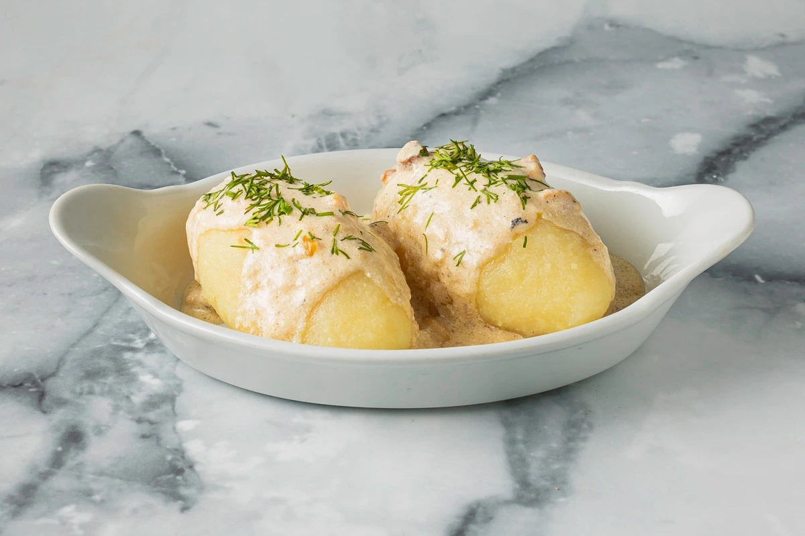

PIETŪS · UŽKANDŽIAI · ŠVENTĖS
Kasdienai skanu.
Šventei gražu.
Pietūs Perkūnkiemyje ir vaišės jūsų susitikimams.

JŪSŲ SUSITIKIMAMS
Maži kąsneliai. Daug progų.
Vieno kąsnio užkandžiai, kiti patiekalai ir erdvė susitikimui. Parašykite apie planuojamą progą, datą ir svečių skaičių — maitinimo bei pobūvio detales aptarsime kartu.
Pasiteirauti telefonuIŠ ARČIAU